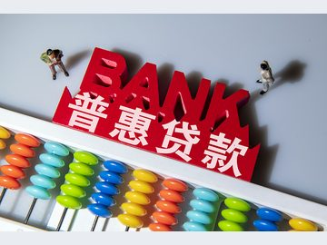

01
3000亿元“增厚家底” 金融央企底气更足
11月18日，财政部发布公告称，1500亿元的中央金融机构注资特别国债（二期）已完成招标。

11月18日，财政部发布公告称，1500亿元的中央金融机构注资特别国债（二期）已完成招标。
制造业是立国之本、强国之基。今年以来，银行业持续优化金融供给，依托产业集群开展批量授信，打造全周期陪伴式服务，推动金融资源加速向先进制造业集聚…

中证报中证网讯（记者 连润）中国证券报记者获悉，毕马威11月17日发布2026年四季度《中国经济观察》报告（以下简称报告）。
中证报中证网讯（记者 欧阳剑环）致同咨询11月18日发布的《致同咨询行业洞察——金融行业》（下称“报告”）显示，当前…
浙江宁波杭州湾新区，琳盛高分子材料有限公司生产车间。工人紧盯显微镜，小心拨动医用精密导管。管材管径约0.8毫米，管壁薄得几乎透光。
①2026年三季度末普惠小微贷款余额38.50万亿元，占比上，大行普惠小微占比从2020年末31.65%升至2026年二季度约47.4%…

可靠容量补偿，是指纳入补偿范围的机组，现阶段包括公用煤电机组、电网侧独立新型储能电站和省间外购电，在系统用电最紧张的顶峰时段能够稳定供电…
据辽宁统计发布，1-10月份，全省经济运行筑底企稳迹象更加明显，主要经济指标边际改善向好。
根据《放射性同位素与射线装置安全许可管理办法》的有关规定，我厅拟对鞍山电磁阀有限责任公司的辐射安全许可证申请作出审批意见。
本报讯 记者崔治报道 依托宁鞍对口合作契机，鞍山主动承接南京创新与产业资源，锚定三大协同赛道精准发力。

截至目前，中金公司、国泰海通等多家券商已完成互换便利（SFISF）操作，换入央行票据并依规买入股票，第三批千亿互换便利从额度落地迈入实质入市阶段。
财信证券研报认为，A股政策底已确认，市场仍处磨底阶段，美股或延续调整。整体来看，大类资产配置的推荐顺序为人民币＞美元＞中债＞美债＞A股＞原油＞黄金＞美股。